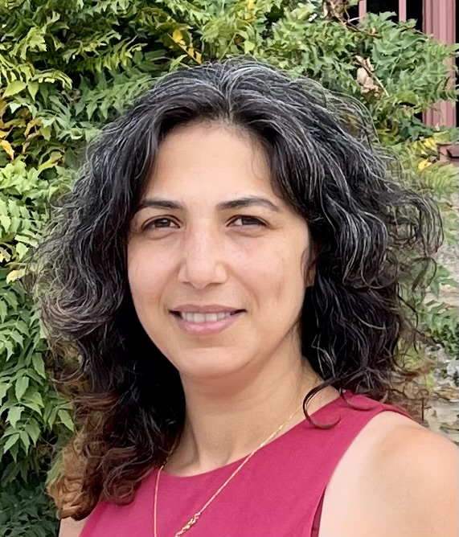

Research Engineer in Precision Livestock Farming
I am passionate about developing mathematical models to enhance animal welfare and performance. I am researcher and deputy head of mosar team at INRAE, AgorParisTech and Paris-Saclay university. My main research interests are using and developing mathemtical models to extract insights from precision livestock farming data. I am particularly inetersted by characterising animals response to environmental challenges and study the impact of the challenges on their welfare. Since 2022, I am the co-leader of national project WAIT4, for "Characterization of animal activities and social interactions generating positive or negative emotions, by artificial intelligence”.

Summary of my background and professional experiences...
IdHAL: masoomeh-taghipoor
ORCID: 0000-0002-5979-1578
ResearcherId: I-8097-2013
The complete list of publications can be found on my ORCID space. Here are four selected publications:
Projects, publications, and thesis supervision...
Strongly convinced of the need to educate interdisciplinary scientists in animal science, she supervises MSc and PhD projects at the intersection of animal science, model development, and data analysis.
Courses and workshops...
LinkedIn | ResearchGate | Email